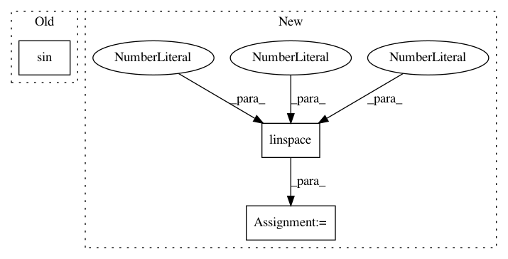

36159c6aece4ec07aad8750f0a0b1f8465c32f78,examples/lines_bars_and_markers/errorbar_limits_simple.py,,,#,14
Before Change
plt.errorbar(x, y, yerr=0.1)
y = np.sin(np.arange(10.0) / 20.0 * np.pi) + 1
plt.errorbar(x, y, yerr=0.1, uplims=True)
y = np.sin(np.arange(10.0) / 20.0 * np.pi) + 2
After Change
fig = plt.figure()
x = np.arange(10)
y = np.sin(x / 20 * np.pi)
yerr = np.linspace(0.05, 0.2, 10)
plt.errorbar(x, y, yerr=yerr)
plt.errorbar(x, y + 1, yerr=yerr, uplims=True)
In pattern: SUPERPATTERN
Frequency: 3
Non-data size: 3
Instances
Project Name: matplotlib/matplotlib
Commit Name: 36159c6aece4ec07aad8750f0a0b1f8465c32f78
Time: 2019-01-10
Author: 2836374+timhoffm@users.noreply.github.com
File Name: examples/lines_bars_and_markers/errorbar_limits_simple.py
Class Name:
Method Name:
Project Name: enthought/chaco
Commit Name: 97de926824b3f5cc711c42d6f81f11042b7bad7c
Time: 2007-11-29
Author: bryanv@651a555e-23ca-0310-84fe-ca9f7c59d2ea
File Name: examples/basic/cmap_image_plot.py
Class Name: PlotFrame
Method Name: _create_window
Project Name: matplotlib/matplotlib
Commit Name: 9937d332ee11207ff2c01501cf3e1a8d5127fbb9
Time: 2019-12-02
Author: 2836374+timhoffm@users.noreply.github.com
File Name: examples/misc/zorder_demo.py
Class Name:
Method Name: